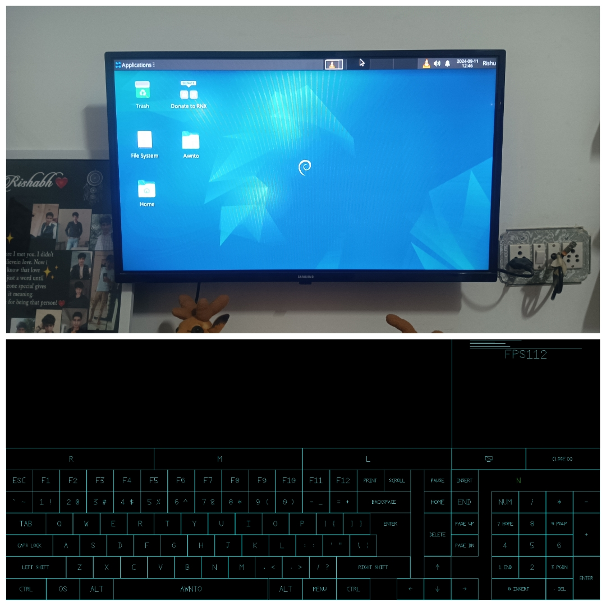

RNX OS - Docs - Miracast / Wifi Display
---------
Author :- Rishabh Sarswa (Rishu)
 Instagram(Rishu) : Here
-----------
Instagram(Rishu) : Here
----------- RNX OS - Miracast / Wifi Display
---------
Index - Table
How to Miracast / Wifi Display using RNX Linux on TV / Other Devices
How to Cast RNX Linux on TV using MiraCast / WiFi Display
First install RNX System
Cast Linux is a feature of RNX Linux using RNX XIO app V2.8 and above
steps :-
1) Install RNX System on your Android Device
2) Open Android settings connect to your TV under cast option
3) Open RNX Neo app then Open RNX XIO app
4) all done now you can use your android phone as remote

--------------------------
Feel free to Message me if you facing any problem
Contact links are given at bottom of this page
----------------------------------
Youtube : Here
Twitter : Here
Instagram(Rishu) : Here
Facebook : Here
WhatsApp(Rishu) : Here
Mail : i.awnto@gmail.com
Telegram : Channnel
Telegram : Group
Telegram : Help Desk
WhatsApp : Channel
----------------------------------